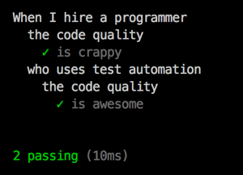

Node.js and ES6 Instead of Java – A War Story
by Patrick Hund
Part II: The Joy and Pain of Test Driven Development

We created a Node.js web app from scratch within 9 weeks that now serves 10.81 million visitors each month*. We used the latest and greatest incarnation of JavaScript – ECMAScript 2015, a.k.a. ES6 – for the backend and frontend alike. We spent late nights coding in gleeful frenzy, stepped into pitfalls, moaned about WTFs, scaled the dizzy heights of asynchronicity. This is the second part of our story.
* AGOF Digital Facts 2015-06
If you missed part I, read up on it here on the eBay Technology Blog Europe.
What Joy? What Pain?
Hi, I'm Patrick, software engineer. My team and I work for mobile.de, which is Germany's biggest online marketplace for cars and other vehicles.
In the second part of my series, I'll focus on automated tests for the backend.
When I started with the backend code for our new application, working with Node.js and the Express framework was still mostly terra incognita for me. I had written a couple of Grunt tasks and an import script to fetch data from an API, but never a fully fledged webapp, at least not in JavaScript.
I had written web apps in Java back in the days before I moved from backend to frontend. Building on that experience and looking at the mess the old mobile.de home page web app had become over the years, one thing was crystal clear:
You cannot write maintainable code without proper unit test coverage.
If you have proper test coverage, you can easily refactor your code without having to fear to break something without being aware of it. This has happened to me countless times. I'll make a wild guess and assume it has happened to you, too. 😊
There's a German saying for this: “Mit dem Arsch einreißen was man mit den Händen aufgebaut hat.” (tearing down with your ass what you've built up with your hands)
Automated tests are the only way I know of to obviate this phenomenon.
The safety net of good test coverage is even more important in JavaScript than in Java, as JavaScript lacks typ safety, something I'm starting more and more to resent (yeah, I know, there's TypeScript, I haven't gotten around to trying that yet).
With a good test setup that runs your tests automatically as you write your code, you can concentrate intensely on solving the problem at hand, without being distracted by things like reloading the page in the browser or restarting the server. You can deep dive into the zone. To me, this is joy indeed.
So What's Not to Like? What's the Pain?
Well, on the mobile.de home page project, I spent more time writing tests and stubs and mocks and fixtures and what not than I spent writing the actual production code. It was maddening sometimes to write tests for things like asynchronous calls, promises, timeouts, etc. The urge to just let it slip and not write a test for some module was sometimes overwhelming, especially given the time constraints we had. I'm very proud to say that my team mates and I resisted the temptation in most cases.
Tasty Mocha
I had previously worked with Jasmine, which is great for testing frontend JavaScript code, especially if you use jQuery, since there is a great lib jasmine-jquery that allows you to create HTML fixtures to test jQuery DOM interaction easily.
My colleague Jonathan proposed to use Mocha instead of Jasmine for testing our Node.js backend code. Since I'm always up for trying out new stuff, naturally, I went for it.
Mocha's syntax is very similar to Jasmine's. You formulate your test cases as a series of nested describe function calls with an it function call containing your assertion:
Using the assertion library Chai, you can write nice readable test code in the style of behavior-driven development (BDD): codeQuality.should.equal("awesome")
The console output of this little example looks like this:

(full code example available on GitHub)
Writing Testable Code
Problems
The Horror, the Horror
Test Coverage
To run the Mocha test suites and measure the code coverage, we use our build system, which is based on npm script runners that trigger various Gulp tasks. The tests are run with npm test or as part of the distribution package build that is run with npm run dist.
For measuring the code coverage, we use Istanbul, the Istanbul plugin for Gulp and Isparta, which provides an instrumenter that makes it possible to measure code coverage on ES6 files that are transpiled through Babel (we use Babel for both the backend and frontend).
Instead of another sandbox example, let's take a peek at our actual production code, the Gulp task for running the backend JavaScript tests:
Some things to note here:
Take a look at the comments at the beginning of the file: gulp-mocha and Isparta have bugs that force us to use some workarounds. In my experience, this is fairly typical when working with npm modules. You have to embrace the fact that software is never perfect and accept it. The good news about open source software is that you can fix these bugs yourself by creating a pull request, or at least contribute by reporting the bugs. You quickly find workarounds on GitHub or Stack Overflow, or have to pick some other solution for your problem. I've gotten in the habit of putting links to these issues in my code's comments and then revisit once in a while to see if the problem was fixed with a new version of the module.
The istanbul.enforceThresholds property makes the build fail when the code coverage drops below a specific percentage. We currently have this set to 84%. Since we have a pre-push hook that executes the tests before pushing to Git, this means you cannot push new code without proper unit tests. Needless to say, this can be annoying sometimes, but it helps a lot to keep our code clean. 😊
Another important configuration detail is includeUntested: true (towards the end of the code example). If you don't set this, Istanbul will only measure the coverage of modules that actually have an accompanying unit test. Modules that don't have any tests at all are not included in the coverage report. I only found out about this a few weeks ago. Up until then, I had often bragged to people: “Yeah, you know. We have 98% test coverage.” After turning this option on, I found out it was actually just 84%.
Here's a little video of our test build in action: